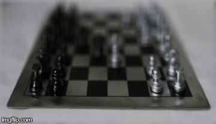
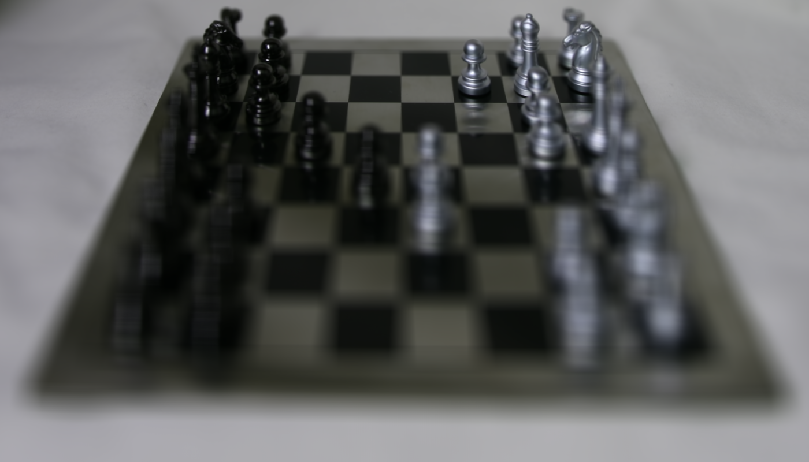

Depth Refocusing and Aperture Adjustment with Light Field Data
Introduction
This project demonstrates how simple operations like shifting and averaging can achieve complex effects. The work is done on the Stanford Light Field Archive, that has some sample datasets comprising of multiple images taken over a regularly spaced grid
Depth Refocusing
The idea is simple. Objects that are far away from the camera do not vary their position significantly, when the camera moves around while keeping the optical axis direction unchanged. The nearby objects, on the other hand, vary their position significantly across images. Therefore averaging all the images in the grid without any shifting will produce an image which is sharp around the far-away objects but blurry around the nearby ones. Similarly, shifting the images 'appropriately' and then averaging allows one to focus on object at different depths.
|  |
|---|
| Sequence of focusing on different depths |
Here is the break down of different focus depths.
|  | ||||
|---|---|---|---|---|
| C=-3 | C=-2 | C=-1 | C=0 | C=1 |
Aperature Adjustment
The idea is also quite simple. Averaging a large number of images sampled over the grid perpendicular to the optical axis mimics a camera with a much larger aperture. Using fewer images results in an image that mimics a smaller aperture. Given radius, I average all the images within the radius of the center camera. By adjusting the radius, I could adjust the aperature.
 |
|---|
| Sequence of focusing on different aperatures |
Here is the break down of different aperatures/radius.
 |
|||||
|---|---|---|---|---|---|
| R=0 | R=1 | R=2 | R=3 | R=4 | R=5 |
Note: This is a class project for CS 194-26 Image Manipulation and Computational Photography taught by Professor Alexei Efros at UC Berkeley. Full description is available here.